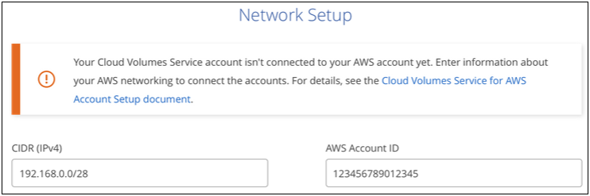

Dokumentationsänderungen beantragen
Dokumentationsänderungen beantragen In GitHub bearbeiten
In GitHub bearbeiten Leitfaden für Beitragende
Leitfaden für BeitragendeManagement von Cloud Volumes Service für AWS
Beitragende
Mit BlueXP können Sie Cloud Volumes auf Basis Ihres erstellen "Cloud Volumes Service für AWS" Abonnement: Sie können auch Cloud Volumes erkennen, die Sie bereits über die Cloud Volumes Service-Schnittstelle erstellt haben, und sie einer Arbeitsumgebung hinzufügen.

|
Mit der Einführung von "Amazon FSX für ONTAP", Neue CVS für AWS-Arbeitsumgebungen können Sie in BlueXP nicht mehr erstellen. Wenn Sie zuvor CVS für AWS-Umgebungen jedoch BlueXP hinzugefügt hatten, können Sie weiterhin Volumes erstellen und managen. |
Cloud Volumes erstellen
Für Konfigurationen, bei denen Volumes bereits in der Cloud Volumes Service-Arbeitsumgebung vorhanden sind, können Sie mit diesen Schritten neue Volumes hinzufügen.
Bei Konfigurationen, für die keine Volumes vorhanden sind, können Sie Ihr erstes Volume direkt über BlueXP erstellen, nachdem Sie das Cloud Volumes Service für AWS Abonnement eingerichtet haben. In der Vergangenheit musste das erste Volume direkt in der Benutzeroberfläche von Cloud Volumes Service erstellt werden.
-
Wenn Sie SMB in AWS verwenden möchten, müssen Sie DNS und Active Directory einrichten.
-
Wenn Sie planen, ein SMB-Volume zu erstellen, müssen Sie über einen Windows Active Directory-Server verfügen, mit dem Sie eine Verbindung herstellen können. Sie geben diese Informationen bei der Erstellung des Volumes ein. Stellen Sie außerdem sicher, dass der Admin-Benutzer in der Lage ist, ein Maschinenkonto im angegebenen Organisationseinheit-Pfad (OU) zu erstellen.
-
Sie benötigen diese Informationen, wenn Sie das erste Volume in einer neuen Region/Arbeitsumgebung erstellen:
-
AWS Konto-ID: Eine 12-stellige Amazon-Account-ID ohne Bindestriche. Informationen zur Suche nach Ihrer Konto-ID finden Sie in dieser "AWS Thema".
-
Classless Inter-Domain Routing (CIDR) Block: Ein nicht verwendeter IPv4-CIDR-Block. Das Netzwerkpräfix muss zwischen /16 und /28 liegen und muss auch innerhalb der Bereiche liegen, die für private Netzwerke reserviert sind (RFC 1918). Wählen Sie kein Netzwerk aus, das Ihre VPC-CIDR-Zuweisungen überschneidet.
-
-
Wählen Sie eine CVS für AWS Arbeitsumgebung aus und klicken Sie auf Neues Volume hinzufügen.

-
Wenn Sie das erste Volume zur Arbeitsumgebung in der Region hinzufügen, müssen Sie AWS Netzwerkinformationen hinzufügen.
-
Geben Sie den IPv4-Bereich (CIDR) für die Region ein.
-
Geben Sie die 12-stellige AWS-Konto-ID (ohne Bindestriche) ein, um Ihr Cloud Volumes Konto mit Ihrem AWS Konto zu verbinden.
-
Klicken Sie Auf Weiter.

-
-
Auf der Seite Virtuelle Schnittstellen akzeptieren werden einige Schritte beschrieben, die Sie nach dem Hinzufügen des Volumes durchführen müssen, damit Sie bereit sind, diesen Schritt abzuschließen. Klicken Sie einfach wieder auf Weiter.
-
Geben Sie auf der Seite Details & Tags Einzelheiten zum Volume ein:
-
Geben Sie einen Namen für das Volume ein.
-
Geben Sie eine Größe im Bereich von 100 gib bis 90,000 gib an (entspricht 88 TIBS).
-
Geben Sie ein Service-Level an: Standard, Premium oder Extreme.
-
Geben Sie einen oder mehrere Tag-Namen ein, um das Volume zu kategorisieren, falls Sie möchten.
-
Klicken Sie Auf Weiter.

-
-
Wählen Sie auf der Seite Protokoll NFS, SMB oder Dual Protocol aus und definieren Sie die Details. Erforderliche Einträge für NFS und SMB sind in separaten Abschnitten unten dargestellt.
-
Geben Sie im Feld Volume Path den Namen des Volume-Exports an, den Sie beim Mounten des Volumes sehen werden.
-
Wenn Sie Dual-Protocol auswählen, können Sie den Sicherheitsstil durch Auswahl von NTFS oder UNIX auswählen. Sicherheitsstile beeinflussen den verwendeten Berechtigungstyp und die Art der Änderung der Berechtigungen.
-
UNIX verwendet Bits im NFSv3 Modus, und nur NFS-Clients können Berechtigungen ändern.
-
NTFS verwendet NTFS ACLs. Nur SMB-Clients können Berechtigungen ändern.
-
-
Für NFS:
-
Wählen Sie im Feld NFS-Version NFSv3, NFSv4.1 oder beides, je nach Ihren Anforderungen.
-
Optional können Sie eine Exportrichtlinie erstellen, um die Clients zu identifizieren, die auf das Volume zugreifen können. Geben Sie Folgendes an:
-
Zulässige Clients unter Verwendung einer IP-Adresse oder eines Classless Inter-Domain Routing (CIDR).
-
Zugriffsrechte als Lese- und Schreibgeschützt.
-
Zugriffsprotokoll (oder Protokolle, wenn das Volume sowohl NFSv3 als auch NFSv4.1 Zugriff ermöglicht) für Benutzer verwendet.
-
Klicken Sie auf + Add Export Policy Rule, wenn Sie zusätzliche Exportrichtlinien-Regeln definieren möchten.
Das folgende Bild zeigt die für das NFS-Protokoll ausgefüllte Volume-Seite:
-

-
-
Für SMB:
-
Aktivieren Sie die SMB-Sitzungsverschlüsselung, indem Sie das Kontrollkästchen für SMB-Protokollverschlüsselung aktivieren.
-
Sie können das Volume in einen vorhandenen Windows Active Directory-Server integrieren, indem Sie die Felder im Abschnitt Active Directory ausfüllen:
Feld Beschreibung Primäre DNS-IP-Adresse
Die IP-Adressen der DNS-Server, die eine Namensauflösung für den SMB-Server angeben. Verwenden Sie ein Komma, um die IP-Adressen zu trennen, wenn Sie auf mehrere Server verweisen, z. B. 172.31.25.223, 172.31.2.74.
Active Directory-Domäne, der Sie beitreten möchten
Der FQDN der Active Directory (AD)-Domäne, der der SMB-Server beitreten soll. Verwenden Sie bei Verwendung von AWS Managed Microsoft AD den Wert aus dem Feld „Directory DNS Name“.
SMB Server NetBIOS-Name
Ein NetBIOS-Name für den zu erstellenden SMB-Server.
Anmeldeinformationen, die zur Aufnahme in die Domäne autorisiert sind
Der Name und das Kennwort eines Windows-Kontos mit ausreichenden Berechtigungen zum Hinzufügen von Computern zur angegebenen Organisationseinheit (OU) innerhalb der AD-Domäne.
Organisationseinheit
Die Organisationseinheit innerhalb der AD-Domäne, die mit dem SMB-Server verknüpft werden soll. Die Standardeinstellung ist CN=Computer für Verbindungen zu Ihrem eigenen Windows Active Directory Server. Wenn Sie von AWS verwaltete Microsoft AD als AD-Server für die Cloud Volumes Service konfigurieren, sollten Sie in diesem Feld OU=Computers,OU=corp eingeben.
Das folgende Bild zeigt die für das SMB-Protokoll ausgefüllte Volume-Seite:


Sie sollten die Anleitung zu den AWS-Sicherheitseinstellungen befolgen, um die korrekte Integration von Cloud Volumes in Windows Active Directory-Server zu ermöglichen. Siehe "Einstellungen der AWS Sicherheitsgruppen für Windows AD Server" Finden Sie weitere Informationen. -
-
Wenn Sie auf der Seite „Volume from Snapshot“ möchten, dass dieses Volume auf Grundlage eines Snapshots eines vorhandenen Volumes erstellt werden soll, wählen Sie den Snapshot aus der Dropdown-Liste „Snapshot Name“ aus.
-
Sie können auf der Seite Snapshot-Richtlinie Cloud Volumes Service aktivieren, um auf Grundlage eines Zeitplans Snapshot-Kopien Ihrer Volumes zu erstellen. Sie können dies jetzt tun oder das Volume zu einem späteren Zeitpunkt bearbeiten, um die Snapshot-Richtlinie zu definieren.
Siehe "Erstellen einer Snapshot-Richtlinie" Weitere Informationen zur Snapshot-Funktionalität.
-
Klicken Sie Auf Volumen Hinzufügen.
Das neue Volumen wird der Arbeitsumgebung hinzugefügt.
Wenn dies das erste Volume ist, das in diesem AWS-Abonnement erstellt wurde, müssen Sie die AWS Management Console starten, damit Sie die beiden virtuellen Schnittstellen akzeptieren können, die in dieser AWS Region zum Verbinden aller Cloud Volumes verwendet werden. Siehe "NetApp Cloud Volumes Service für AWS – Account Setup Guide" Entsprechende Details.
Sie müssen die Schnittstellen innerhalb von 10 Minuten akzeptieren, nachdem Sie auf die Schaltfläche Add Volume geklickt haben, oder das System hat möglicherweise eine Auszeit. Sollte dies passieren, senden Sie eine E-Mail an cvs-support@netapp.com mit Ihrer AWS Kunden-ID und der NetApp Seriennummer. Der Support behebt das Problem, und Sie können den Onboarding-Prozess neu starten.
Fahren Sie dann mit fort "Montieren des Cloud Volumes".
Montieren Sie das Cloud Volume
Ein Cloud-Volume kann in Ihre AWS Instanz eingebunden werden. Cloud Volumes unterstützen derzeit NFSv3 und NFSv4.1 für Linux- und UNIX-Clients sowie SMB 3.0 und 3.1.1 für Windows-Clients.
Hinweis: Bitte verwenden Sie das hervorgehobene Protokoll/Dialekt, das von Ihrem Kunden unterstützt wird.
-
Öffnen Sie die Arbeitsumgebung.
-
Bewegen Sie den Mauszeiger über die Lautstärke und klicken Sie auf Mounten Sie die Lautstärke.
Auf NFS- und SMB-Volumes werden Mount-Anweisungen für dieses Protokoll angezeigt. Dual-Protokoll-Volumes bieten beide Befehlssets.
-
Bewegen Sie den Mauszeiger über die Befehle und kopieren Sie sie in die Zwischenablage, um diesen Prozess zu vereinfachen. Fügen Sie einfach das Zielverzeichnis / den Bereitstellungspunkt am Ende des Befehls hinzu.
NFS-Beispiel:

Die von definierte maximale I/O-Größe
rsizeUndwsizeOptionen sind 1048576, allerdings wird für die meisten Anwendungsfälle der empfohlene Standardwert von 65536 verwendet.Beachten Sie, dass Linux-Clients standardmäßig auf NFSv4.1 gesetzt werden, es sei denn, die Version wird mit dem angegeben
vers=<nfs_version>Option.SMB-Beispiel:

-
Stellen Sie über eine SSH oder RDP-Client eine Verbindung zu Ihrer Amazon Elastic Compute Cloud (EC2) Instanz her, und befolgen Sie dann die Mount-Anweisungen für Ihre Instanz.
Nach Abschluss der Schritte in der Mount-Anleitung haben Sie das Cloud-Volume erfolgreich in die AWS-Instanz eingebunden.
Management vorhandener Volumes
Sie können vorhandene Volumes managen, wenn sich Ihre Storage-Anforderungen ändern. Sie können Volumes anzeigen, bearbeiten, wiederherstellen und löschen.
-
Öffnen Sie die Arbeitsumgebung.
-
Zeigen Sie den Mauszeiger auf das Volume.

-
Managen Sie Ihre Volumes:
Aufgabe Aktion Anzeigen von Informationen zu einem Volume
Wählen Sie ein Volume aus, und klicken Sie dann auf Info.
Bearbeiten eines Volumes (einschließlich Snapshot-Richtlinie)
-
Wählen Sie ein Volume aus, und klicken Sie dann auf Bearbeiten.
-
Ändern Sie die Eigenschaften des Volumes und klicken Sie dann auf Update.
Holen Sie den NFS- oder SMB-Mount-Befehl
-
Wählen Sie ein Volume aus, und klicken Sie dann auf Mounten Sie das Volume.
-
Klicken Sie auf Kopieren, um den Befehl(en) zu kopieren.
Erstellen Sie bei Bedarf eine Snapshot Kopie
-
Wählen Sie ein Volume aus, und klicken Sie dann auf Snapshot Kopie erstellen.
-
Ändern Sie ggf. den Snapshot-Namen und klicken Sie dann auf Erstellen.
Ersetzen Sie das Volume durch den Inhalt einer Snapshot Kopie
-
Wählen Sie ein Volume aus, und klicken Sie dann auf Volume in Snapshot zurücksetzen.
-
Wählen Sie eine Snapshot Kopie aus und klicken Sie auf Zurücksetzen.
Löschen einer Snapshot Kopie
-
Wählen Sie ein Volume aus, und klicken Sie dann auf Löschen einer Snapshot Kopie.
-
Wählen Sie die Snapshot Kopie aus, die Sie löschen möchten, und klicken Sie auf Löschen.
-
Klicken Sie zur Bestätigung erneut auf Löschen.
Löschen Sie ein Volume
-
Heben Sie die Bereitstellung des Volumes von allen Clients ab:
-
Verwenden Sie unter Linux-Clients das
umountBefehl. -
Klicken Sie unter Windows-Clients auf Netzlaufwerk trennen.
-
-
Wählen Sie ein Volume aus, und klicken Sie dann auf Löschen.
-
Klicken Sie zur Bestätigung erneut auf Löschen.
-
Entfernen Sie Cloud Volumes Service aus BlueXP
Sie können ein Cloud Volumes Service für AWS Abonnement und alle vorhandenen Volumes von BlueXP entfernen. Die Volumes werden nicht gelöscht, sie werden nur aus der BlueXP-Schnittstelle entfernt.
-
Öffnen Sie die Arbeitsumgebung.

-
Klicken Sie auf das
 Klicken Sie oben auf der Seite auf Cloud Volumes Service entfernen.
Klicken Sie oben auf der Seite auf Cloud Volumes Service entfernen. -
Klicken Sie im Bestätigungsdialogfeld auf Entfernen.
Active Directory-Konfiguration verwalten
Wenn Sie Ihre DNS-Server oder Active Directory-Domäne ändern, müssen Sie den SMB-Server in Cloud Volumes Services ändern, damit dieser weiterhin Storage für Clients bereitstellen kann.
Sie können den Link zu einem Active Directory auch löschen, wenn Sie ihn nicht mehr benötigen.
-
Öffnen Sie die Arbeitsumgebung.
-
Klicken Sie auf das
Klicken Sie oben auf der Seite auf Active Directory verwalten. -
Wenn kein Active Directory konfiguriert ist, können Sie jetzt ein Verzeichnis hinzufügen. Wenn eine konfiguriert ist, können Sie die Einstellungen ändern oder mit dem löschen
Schaltfläche. -
Legen Sie die Einstellungen für das Active Directory fest, dem Sie beitreten möchten:
Feld Beschreibung Primäre DNS-IP-Adresse
Die IP-Adressen der DNS-Server, die eine Namensauflösung für den SMB-Server angeben. Verwenden Sie ein Komma, um die IP-Adressen zu trennen, wenn Sie auf mehrere Server verweisen, z. B. 172.31.25.223, 172.31.2.74.
Active Directory-Domäne, der Sie beitreten möchten
Der FQDN der Active Directory (AD)-Domäne, der der SMB-Server beitreten soll. Verwenden Sie bei Verwendung von AWS Managed Microsoft AD den Wert aus dem Feld „Directory DNS Name“.
SMB Server NetBIOS-Name
Ein NetBIOS-Name für den zu erstellenden SMB-Server.
Anmeldeinformationen, die zur Aufnahme in die Domäne autorisiert sind
Der Name und das Kennwort eines Windows-Kontos mit ausreichenden Berechtigungen zum Hinzufügen von Computern zur angegebenen Organisationseinheit (OU) innerhalb der AD-Domäne.
Organisationseinheit
Die Organisationseinheit innerhalb der AD-Domäne, die mit dem SMB-Server verknüpft werden soll. Die Standardeinstellung ist CN=Computer für Verbindungen zu Ihrem eigenen Windows Active Directory Server. Wenn Sie von AWS verwaltete Microsoft AD als AD-Server für die Cloud Volumes Service konfigurieren, sollten Sie in diesem Feld OU=Computers,OU=corp eingeben.
-
Klicken Sie auf Speichern, um Ihre Einstellungen zu speichern.